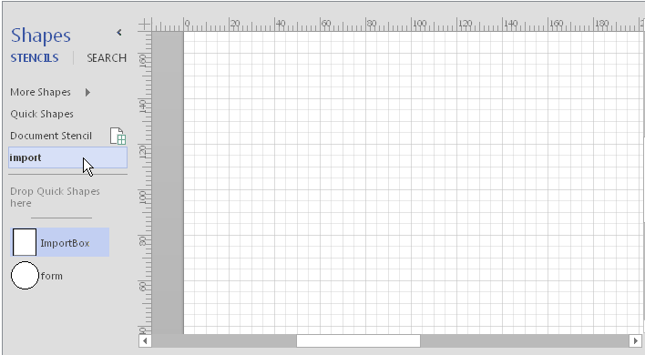

The native data visualizer works only with Visio Pro and is not available to owners of the Standard version. However, it is not difficult to extend this technology to Visio Standard. All you need is to help Visio get to the data. This is a major hurdle for Visio Standard. After that, the task of automatic charting can be solved even by novice VBA programmers. Moreover, it is possible to implement several simple algorithms that will satisfy most user needs.
An example of this approach is the "Visio stencil for data import" available in Gumroad - https://gum.co/XBmS.
This is a Visio extension for data visualization, made in the form of a stencil containing macros. A main feature of the stencil is that instead of the external data window, the application uses data transfer through a special shape. In terms of functionality, this application is only slightly inferior to the regular data visualizer. And at the same time it works in Visio Standard.
In the first version of the stencil, the user had to copy the data to shape using a clipboard. This provided data transfer, but not all users liked it.
The latest revision of the stencil added two more ways to import data. Now you can import data from a text file and from an Excel file. The remaining features of the program have remained virtually unchanged, so the article "Visio Stencil for data import" is still relevant.
Now the import process looks like this

Compared to a regular data visualizer, the application has more stringent data structure requirements. It is believed that for a more flexible configuration to an arbitrary source, the user can use an intermediate Excel file that will provide both communication with the primary source and the necessary data transformations to the required form.
The application still comes in two versions:
- the free version has full functionality, but does not provide access to the source code.
- in the paid version, the code is open, which allows you to study the methods used and use them to create similar applications.